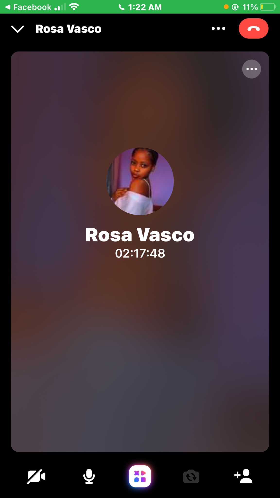
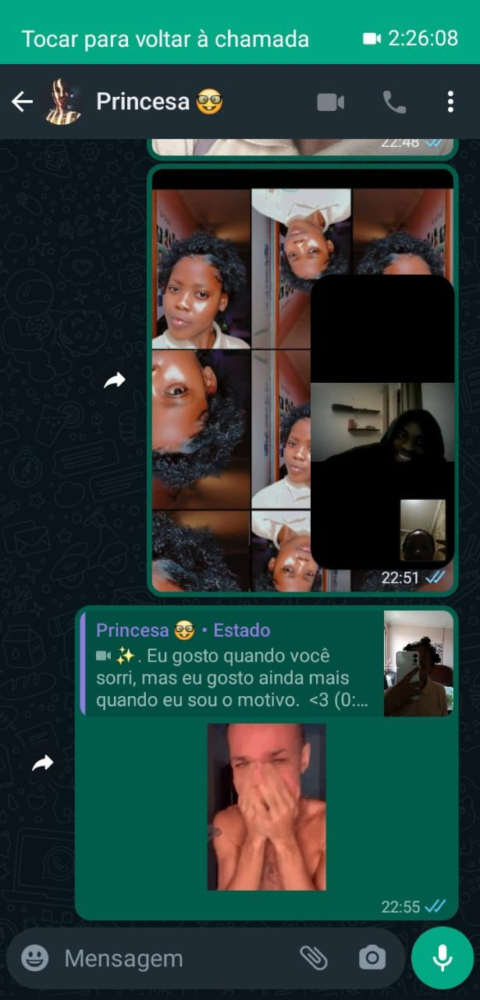
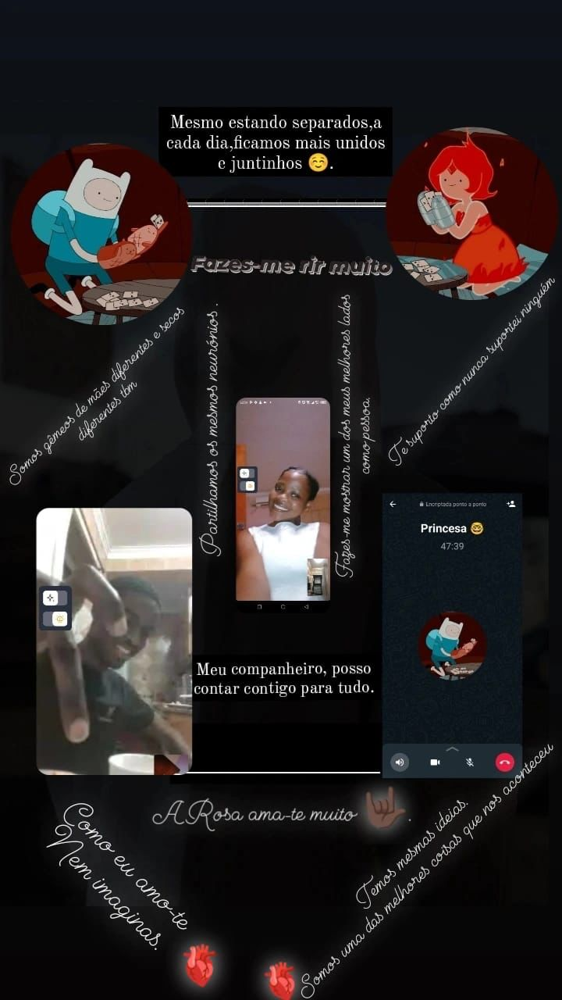
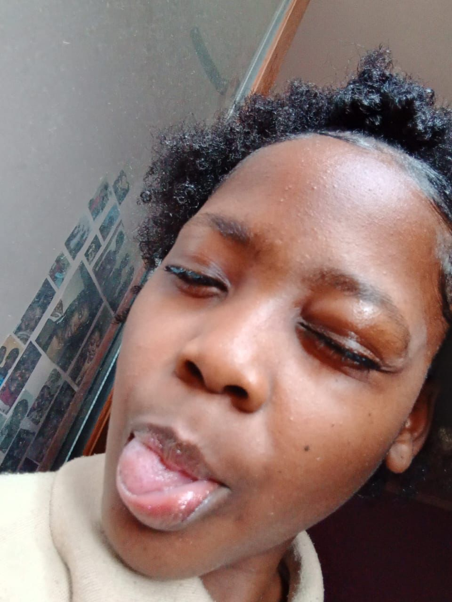

Eu criei esta página apenas para nos lembrarmos de alguns momentos marcantes na nossa
trajectória enquanto casal, claro que não podia colocar tudo, pq há coisas que apenas
têm de ficar entre nós, gatinha ;)
na call :

Quero que te lembres daquela altura da nossa amizade, em que nós ficavamos horas a fios
apenas a falar e a procurar uma conexão mais profundo um com o outro, isso faz-me ver,
que mesmo antes do nosso relacionamento amoroso, já tinhamos um grande carinho um pelo outro,
e fico feliz por puder dizer de peito cheio, que ainda temos essa essência na nossa relação,
agora além da conexão temos a oportunidade de explorar outras aspecto, e isso anima-me bastante.
Não imagino uma vida sem ti, e o quanto me fazes bem e ajudas-me a conhecer-me cada vez mais,
amo-te muito por isso e por muito mais.

Além das horas que ficavamos a buscar uma conexão mais profunda na nossa relação,
não podemos por a parte aqueles momentos mais descontraídos que tinhamos e temos até hoje,
o que me alegra mais é que nós conseguimos manter a essência do nosso relacionamento,
conseguimos conservar todos os aspectos saudáveis da nossa amizade e conseguimos trazer tudo,
para esta relação tão maravilhosa que temos até hoje.
edit:

Olhar para esta foto, faz-me lembrar todo o esforço e dedicação, que já havia nesta relação,
mesmo antes dela tornar-se amorosa, tu és uma pessoa incrível, maravilhosa, espetacular, uma
ótima parceira e sempre deste-me o impulso que precisava para chegar onde precisava, mas isso
tudo apenas pelos teus esforços em ajudar-me, e as tuas constantes demonstrações de carinho e afeto,
com gestos destes tipos, fizeste-me sentir como nunca antes, e cada coisa que fazes para nós, marca-me,
de uma maneira mais profunda que a anterior, e todos os dias lembro-me que sou o rapaz mais feliz que há,
por estar com uma rapariga tão espetacular como tu Rosa Vasco.
A minha favorita:

Antes de mais, não fiques chateada kkkkkkk, prometo que fui buscar essa foto nas nossas conversas
antigas, de qualquer maneira se a minha foto favorita não estivesse aqui, não seria uma " true time line ".
Sobre esta foto, só quero dizer que, é a minha favorita como já sabes, e parecendo que não, meio que comecei
a pensar mais em ti noutras vertentes, quando recebia fotos deste gênero, sejamos francos, essa boquinha deixa a
deseja : )